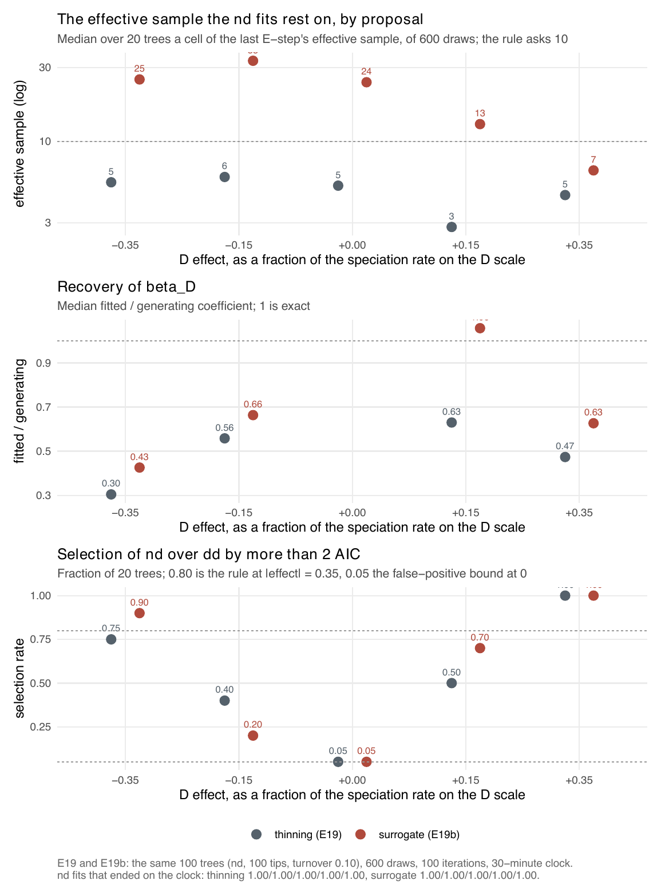

E19 — Is the pendant-age coefficient recovered, and is nd selected over dd?
| Status | complete (E19 and E19b); both clock-limited: every nd fit ended on its 30-minute clock. Followed by E30 (300 iterations) and E37 (1000 iterations). Superseded by E46 for nd recovery when it reports; the proposal-adoption rule is applied again in E46 under the corrected likelihood (Estimability) |
| Package build | E19 library e19, installed at 1a1910d (the D compensator change) two minutes before launch; E19b library e19b at 8384e59, a merge containing 2a354f0. Unresolved: the build audit gives the libraries e18 … e23 only as the range edce33d … f5bf6f1, which straddles 1a1910d, and the launch record is the only source for the install commit |
| Driver / analysis | sim/E19-pendant.R (E19b: --nd-sampling bdi --out results/E19b); figures sim/figures-supplement.R, sim/figures-e19b.R |
| Data | results/E19/pendant.csv, results/E19b/pendant.csv (100 rows each, all ok) |
Question
The pendant-age models have no exact likelihood, so nothing can separate the estimator's error from the tree's own sampling error. What can be measured is what E12 measured for ned: recovery of the coefficient against its generating value and selection by AIC. E19 does that for nd,
\[\lambda_s(t) = \beta_0 + \beta_N N(t) + \beta_D D_s(t), \qquad D_s(t) = E_s(t) - \bar E(t),\]
where \(E_s(t)\) is the time since lineage \(s\) was born or last split and \(D\) is centred on the mean over the lineages alive (linear link here; \(\mu\) carries \(\gamma_0, \gamma_N, \gamma_D\) likewise).
E19's fits rested on median effective samples of 3-6 of 600 draws on the thinning proposal. E19b asks whether the surrogate proposal, which since the E19b build admits \(D\) models, changes that: its mean-field lineage has \(D = 0\), so the mean field is the dd one, and \(\beta_D\) enters only the attachment of hidden births, each candidate parent weighted by the model's rate at that instant.
Design
| Parameter | Value | Meaning |
|---|---|---|
| generator | nd, linear link |
pendant-age model with an \(N\) term |
| tips | 100 (observed 81-112) | capacity recalibrated per cell (97.5 at -0.35, 107.2 elsewhere) |
| turnover | 0.10 | \(\gamma_0 / \beta_0\) at \(N = 0\), \(\beta_0 = 0.5\) |
| crown age | 15 | |
| \(D\) scale | 2.83 | sd of pendant age over lineages alive at the present in a dd clade of 100 tips |
| effects | 0, ±0.15, ±0.35 | \(\beta_D\) as a fraction of \(\beta_0\) at one \(D\) scale unit: \(\beta_D = \pm0.0265, \pm0.0619\) per time unit |
| trees per cell | 20 | 100 trees; E19b uses the same trees by seed |
| fits | dd on the surrogate proposal; nd on thinning (E19) or the surrogate (E19b) |
|
| draws | 600 | |
max_iter / clock |
100 / 30 minutes per fit | |
| box | sim/box.R, \(D\) slots scaled by the observed spread of pendant ages |
Measured once before E19b, at the generating value on 12 nd trees of this design (600 draws): surrogate effective sample 2-439 against 1.3-15 for thinning, higher on 11 of 12. Both proposals lose draws to one event under the linear link: an observed split by an old lineage has rate zero unless a hidden split preceded it; thinning rejects such draws, the surrogate drops them.
Pre-set rule
E19. At \(|\text{effect}| = 0.35\): median \(\hat\beta_D/\beta_D\) in \([0.75, 1.25]\) and the right sign on \(\ge 80\%\) of trees, and nd over dd by \(> 2\) AIC on \(\ge 80\%\); false positives \(\le 5\%\) at zero. Cells whose median nd effective sample is below 10 are reported and excluded from the selection statement. Recovery is reported at every effect whatever the selection says.
E19b. The E19 rule applied to E19b; and the surrogate is adopted as the default proposal for \(D\) models if the median nd effective sample is above 10 in every cell where E19's was below it, with no cell whose recovery ratio or selection falls below E19's.
Results
| effect | E19 ratio (q1-q3) | sign | ESS | < 10 | nd over dd |
E19b ratio (q1-q3) | sign | ESS | < 10 | nd over dd |
|---|---|---|---|---|---|---|---|---|---|---|
| -0.35 | 0.30 (0.27-0.32) | 1.00 | 5.5 | 13 | 0.75 (s-l) | 0.43 (0.37-0.48) | 1.00 | 25.2 | 2 | 0.90 |
| -0.15 | 0.56 (0.52-0.62) | 1.00 | 5.9 | 18 | 0.40 (s-l) | 0.66 (0.54-0.74) | 0.95 | 33.2 | 0 | 0.20 |
| 0 | \(\hat\beta_D\) median +0.0013 | — | 5.2 | 16 | FP 0.05 (s-l) | \(\hat\beta_D\) median +0.011 | — | 24.2 | 2 | FP 0.05 |
| +0.15 | 0.63 (0.46-0.86) | 0.95 | 2.8 | 19 | 0.50 (s-l) | 1.06 (0.86-1.53) | 0.95 | 13.0 | 7 | 0.70 |
| +0.35 | 0.47 (0.42-0.65) | 1.00 | 4.5 | 16 | 1.00 (s-l) | 0.63 (0.54-0.77) | 1.00 | 6.5 | 15 | 1.00 (s-l) |
ESS: median effective sample of the nd fit's last E-step, of 600. "< 10": fits below 10. s-l: sampler-limited (median ESS < 10). Every one of the 200 nd fits ended on its 30-minute clock (stop_nd = time_budget on 100 of 100 in both files), so every cell of both runs is clock-limited. The dd fits on the same trees had effective samples of 260-324. The extinction slope \(\gamma_D\), generated at zero, was fitted at a median +0.014 to +0.022 per time unit in E19 and -0.013 to +0.019 in E19b.

nd fit per tree, left on thinning (E19), right on the surrogate (E19b). Every cell median (red) lies between zero and the dashed identity line except E19b at +0.15: the sign comes back, the size does not, and on the thinning side almost every point is open (fewer than 10 effective draws).
Conclusion
E19: not met. The ratio is 0.30 and 0.47 at ∓0.35, outside \([0.75, 1.25]\); the sign half is met (1.00 in both cells). Every cell is sampler-limited, so the selection half is not evaluable. E19b: not met. The ratio is 0.43 and 0.63 at ∓0.35; the sign half is met; selection is 0.90 at -0.35 (met) and not evaluable at +0.35 (sampler-limited); false positives 0.05, at the ceiling. Adoption rule: not met: the +0.35 cell stays at 6.5 effective draws and selection at -0.15 falls from 0.40 to 0.20, so thinning stays the default proposal for \(D\) models and the surrogate is available on request (--nd-sampling bdi, sampling = "bdi").
What both runs show is that the sign of \(\beta_D\) is recovered at every effect of ±0.15 and stronger, and its size in one cell only (+0.15 on the surrogate, 1.06). Because every nd fit was cut at 30 minutes, the shortfall in size cannot be assigned to the model or to the budget from these runs: that is the question E30 was registered to answer. The supplement quotes E19's zero-effect median as -0.0005; results/E19/pendant.csv gives +0.0013. E19b's zero-effect median of +0.011 is 0.17 of the +0.35 coefficient.
Both runs maximised the earlier D likelihood. Emphasis 4e0b9dd changed the D likelihood; before it the likelihood held the clade mean pendant age at its segment-end value, so \(D\) grew within a segment while the simulator held it constant; from it \(D\) is constant between events in both. On complete trees E44 measured d's \(\beta_D\) at 0.70 and 1.46 of its value under the earlier likelihood and 0.95 and 1.16 under the current one (nd at -0.35: 0.77 and 1.01). The size shortfall and the adoption verdict above are those of the earlier likelihood; E46 fits the 100-tip d and nd cells on both proposals and applies E19b's adoption rule again.
Related
- E12 — the same recovery-and-selection design for
ned, whose sampler-limited rule E19 copies. - E20 and E21 (E21b) —
ndtrees on the covariate path: BIC picks \(N + D + \mathrm{ED}\), never \(N + D\) alone, at 100 tips. - E23 —
ndinside the one-call ladder. - E24 —
d, the pendant-age covariate without an \(N\) term. - E30 — E19b's design at ±0.35 with 300 iterations and a four-hour clock.
- E37 — the same trees with 1000 iterations.